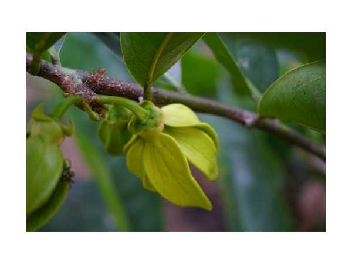

Artabotrys hexapetalus
Common Names: Climbing Ylang-Ylang, Tail Grape, Hook Climber, Basket Vine
Local Name: Manoranjitham (Tamil), Hara Champa (Hindi), Kathari Champaka (Malayalam)
Family: Annonaceae
Origin: India and Sri Lanka; widely cultivated in tropical Asia
Plant Type: Perennial evergreen climbing shrub; climbs by hooked peduncles
Variety: Species type; intensely fragrant yellow-green flowers
Average Lifespan: 20–40+ years
| Growth Habit | Vigorous evergreen climbing shrub; climbs using hooked, recurved peduncles (modified flower stalks) |
| Plant Size | 4–10 meters as climber; can be pruned as a 2–3 meter shrub |
| Leaves | Alternate, oblong-lanceolate; 8–15 cm long; glossy dark green; smooth margins |
| Flowers | 6 petals in two whorls; yellow-green to pale yellow; 2–3 cm; intensely fragrant (ylang-ylang-like scent) |
| Flower Characteristics | Extremely fragrant; flowers borne on hooked peduncles; blooms multiple times per year; fragrance strongest at night |
| Fruit | Cluster of oval berries, 2–3 cm; yellow-orange when ripe; borne on the hooked peduncle |
| Fruit Color | Green turning yellow-orange at maturity |
| Seed Characteristics | 1–2 seeds per berry; oval, brown; 1–1.5 cm |
| Root System | Deep, woody root system; drought-tolerant once established |
| Climate | Tropical and subtropical; warm, humid conditions preferred |
| Temperature Range | 20–35°C; frost-sensitive |
| Rainfall Requirement | 800–1500 mm; moderate moisture |
| Soil Type | Well-drained fertile loam; tolerates a range of soil types |
| Soil pH Preference | 6.0–7.5 |
| Sun Requirement | Full sun to partial shade; blooms best in full sun |
| Spacing | 3–5 meters apart; needs strong trellis or pergola |
| Irrigation Method | Regular watering; drip or basin; drought-tolerant once established |
| Water Requirement | Moderate; reduce in cooler months |
| Can it Grow in Pots? | Yes, in large pots (40–60 liters) with support; prune to manage size |
| Fertilizer Schedule | Monthly during growing season; balanced NPK with micronutrients |
| Recommended Organic Fertilizers | Compost, vermicompost, neem cake, bone meal |
| Pesticide Frequency | As needed; generally pest-resistant |
| Recommended Organic Pesticides | Neem oil for scale and mealybugs |
| Mulching Practice | Organic mulch around base to retain moisture |
| Training System | Train on pergola, trellis, or fence; hooks naturally attach to support |
| Pruning Time | After flowering; late winter or early spring |
| How to Prune | Remove dead wood; thin crowded branches; light pruning to shape; avoid heavy pruning |
| Common Pests | Scale insects, mealybugs (occasional) |
| Common Diseases | Root rot in waterlogged soils; generally disease-resistant |
| Disease Prevention & Remedies | Ensure good drainage; good air circulation; neem oil for fungal issues |
| Flowering Months | Multiple flushes per year; peak March–May and September–November |
| Fruiting Season | Fruits ripen 3–4 months after flowering |
| Pollination Type | Insect-pollinated; beetles are primary pollinators |
| Pollination Notes | Fragrance attracts beetle pollinators; flowers open at night for maximum fragrance |
| Pollination Details | Beetle-pollinated; fragrance is primary attractant |
| Propagation by Seeds | Seeds germinate in 4–8 weeks; sow fresh seeds; slow to establish |
| Propagation by Cuttings | Semi-hardwood cuttings with rooting hormone; takes 6–8 weeks to root |
| Propagation by Grafting | Air layering is more reliable than cuttings for this species |
| Water Usage | Moderate; drought-tolerant once established |
| Soil Conservation Practices | Dense evergreen cover provides good shade and reduces soil moisture loss |
| Organic Practices Used | Minimal inputs; compost-based feeding |
| Companion Plants | Grows well with other fragrant tropical plants; good for sensory gardens |
| Biodiversity Benefits | Attracts beetles and night-flying insects; fruits eaten by birds |
| Symbolism | "Manoranjitham" means "that which delights the mind" in Tamil; prized for its extraordinary fragrance |
| Traditional Uses | Flowers used in garlands and religious offerings; fragrant oil extracted for perfumery; used in traditional medicine for fever and skin conditions |
Add your field observations here.